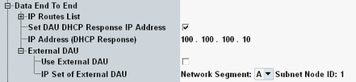
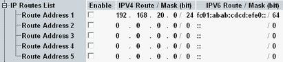

This section provides settings related to an internal or external data application unit (DAU). For background information, see "Data End-to-End Tests".

Configures additional destination addresses for which the DAU routes packets to the DUT. Only for operation mode "Station".
The addresses of the DUT are known by the DAU. You do not need to enter them here. Enter, for example, addresses of a PC or server behind the DUT, for which traffic is to be routed via the DUT.
Depending on the configured IP version support, only the IPv4 part or the IPv6 part of the routes list is displayed (see "IP Version Support").

To specify a destination, enable a line, enter the address and specify the number of bits identifying the subnet.
Example: "Mask" = 24 bit means that the first 24 bits identify the subnet. For IPv4, 24 bit corresponds to the subnet mask 255.255.255.0.
Remote command:If the checkbox is enabled, you can specify the IPv4 address that the DAU assigns to the DUT via DHCP.
Remote command:Configures and enables the usage of an external DAU, see also "Data End-to-End Tests".
Enable the checkbox if you want to use an external DAU.
The two instruments must be connected via LAN. For details, refer to the DAU documentation.
Remote command:Select the "Network Segment" and "Subnet Node ID" of the R&S CMW where the external DAU is installed. You can check the values in the remote instrument's "Setup" dialog > "Misc" > "IP Subnet Config".
The two instruments must use the same network segment and must have different node IDs.
Remote command: